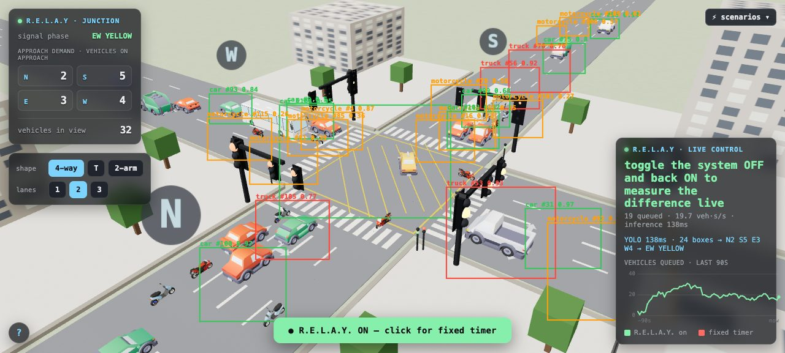
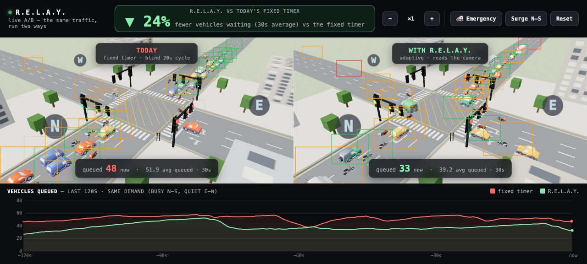
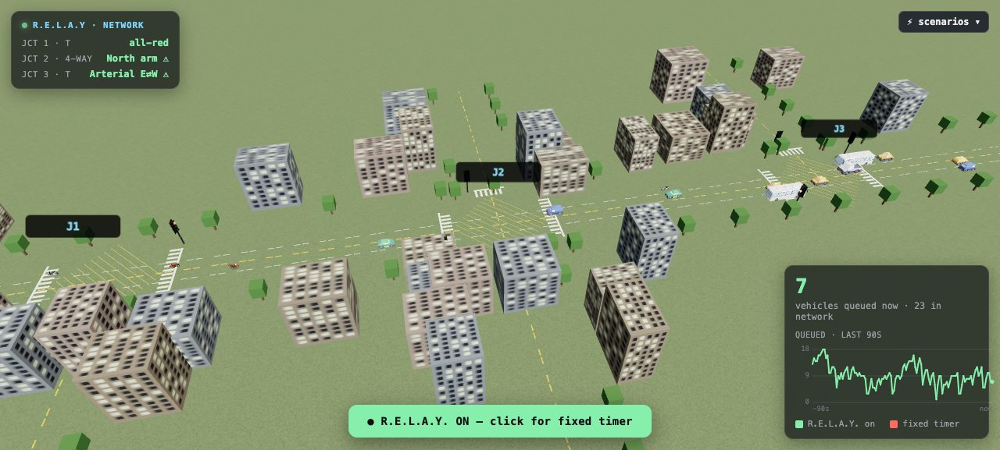

Traffic lights that can see.
One ordinary camera watches the junction. The light gives green where the traffic actually is —
and never wastes it on an empty lane.
No new poles. No digging up roads. The camera was already there — it was just bored.
A fixed timer gives every lane its turn — even a lane with nobody on it. Somewhere right now, forty people are waiting for nobody.
Four steps, forty times a second. Simple enough to explain to your grandmother, checked strictly enough to satisfy a traffic engineer.
Seen by the camera or announced by a radio tag — their arm turns green before they arrive. Time-limited, so one ambulance can't hold a city hostage.
Waiting pedestrians build pressure like cars do, and the walk light holds while anyone is still on the zebra.
"Max-pressure" control: a published method with stability proofs. An engineer can read our whole brain in an afternoon.
Here's one real moment at a junction, exactly as the system sees it. Score = how much is waiting × how long it's waited. A bus counts as 3, a car as 1, a motorbike as 0.3 — because that's how much road they hold.
Nobody waits past 90 s. Hit the cap → you're served next, period. No lane can be starved.
Ambulance beats everything — but only for a bounded time, so it can't freeze the junction.
No flicker, no hogging. Every green lasts at least 5 s; none may hog past 45 s.
Queue drained? Move on. If the served lanes sit empty a couple of seconds, green moves early.
That's the whole brain: one score per road, four rules on top. Your bank's OTP form is more complicated.

Why simulate? Kathmandu junction footage is police-only, and you can't order a real rush hour at 2 a.m. The sim is our infinite training ground — the same brain runs both worlds.
No pedestrians were harmed. Some virtual buses were mildly inconvenienced.
Nothing staged: every frame runs the identical camera → count → decide pipeline the junction uses. Each deployed camera gets a detector fine-tuned on its own view — accuracy 0.95 on cameras it knows.

range 19–59% depending on demand — measured live, same cars, same seconds
Independent check: a 2023 engineering study of Kathmandu junctions predicts 33–49% from adaptive control. We measure inside that envelope — no magic claimed.

A jammed downstream junction automatically calms the one feeding it. Scaling from one junction to a corridor is a settings change, not new hardware.
The junctions gossip about traffic. It's the one kind of gossip that helps.
| system | cost / intersection | needs | pedestrians | ambulances |
|---|---|---|---|---|
| SCATS / SCOOT | $20,000–80,000 | sensors cut into the road | push-button | extra hardware |
| Surtrac | $20,000+ | radar + camera rack | partial | partial |
| Lalitpur AI lights (2024) | — | camera, density only | none | none |
| R.E.L.A.Y. | ~$250–400 | the CCTV camera already on the pole | counted & served | priority, time-bounded |
Lalitpur proved cameras survive here — its 2024 AI lights still run. They read density only. Pedestrians, ambulances, empty-lane skipping and coordination are the gap — that's us. And nobody digs up a single road.
Camera dies, fog, chaos? Counts fade out and the junction becomes a plain fixed timer — exactly what it is today. That's the floor, not the ceiling.
No crossing greens, ever. No one waits past the hard cap. Ambulance priority is time-bounded. Each rule is code that refuses to ship if broken.
Dropped cameras, ghost detections, saturated gridlock, two ambulances at once — every failure we could invent is written down and handled.
Phase one touches nothing: it watches a real junction and logs what it would have done next to what the timer did. Judge it on paper before it touches a light.
Manual override is always there. The system serves the traffic police; it doesn't replace them.
No black-box AI making signal decisions — the AI only counts vehicles. The decision logic is a page of published math anyone can audit.
✓ 50–300× cheaper — ~$250–400 per junction vs $20k–80k. No road cutting, no new poles: the camera is already there.
✓ Serves everyone — vehicles by real demand, pedestrians counted and served, ambulances get bounded priority. Nobody waits forever, by hard rule.
✓ Measurable & auditable — every claim comes from side-by-side A/B; the decision logic is a page of published math, not a black box.
✓ Fails safe — worst case it becomes today's fixed timer. The floor is the status quo.
✕ Cameras have bad days — night, fog, monsoon dust. Answer: tune on that camera's own night/rain frames; if vision degrades, fall back to fixed timing automatically.
✕ Each site needs a tune-up day — one day of the junction's own footage before it's sharp. Answer: the labelling is automatic; it's a day, not a project.
✕ Full gridlock beats everyone — past total saturation no signal plan helps. Answer: we win everywhere below it, and coordination delays reaching it.
✕ Tech wasn't why KTM's lights died — maintenance and ownership were. Answer: commodity parts, remote diagnostics, and a shadow-mode adoption path that earns trust before touching a light.
1 · Pick one junction with a working police CCTV camera and a signal cabinet — the feeds already flow to the traffic police control room.
2 · One day of its own footage auto-tunes the detector to that exact view — its angles, its light, its motorbikes.
3 · Thirty days of shadow mode — it only watches and logs "what I would have done" next to what the timer did. Zero risk, public dashboard.
4 · Actuate with police override, publish before/after waits — then extend down one arterial to a hospital green-wave.
| Lalitpur (2024) | R.E.L.A.Y. | |
|---|---|---|
| reads | vehicle density only | every vehicle, weighed by size |
| pedestrians | not sensed | counted & served |
| ambulances | no priority | priority, time-bounded |
| empty lanes | still get greens | skipped, always |
| junctions | each alone | coordinated, green waves |
| results | not published | measured & public, by design |
Respect where due: Lalitpur proved camera-based control survives Kathmandu valley conditions — dust, monsoon, power cuts. We stand on that proof and finish the job.
The software is built and measured. The road is the missing piece.
We're looking for a pilot partner and the funding to run it.
Green lights for everyone. Well — everyone who's actually there.